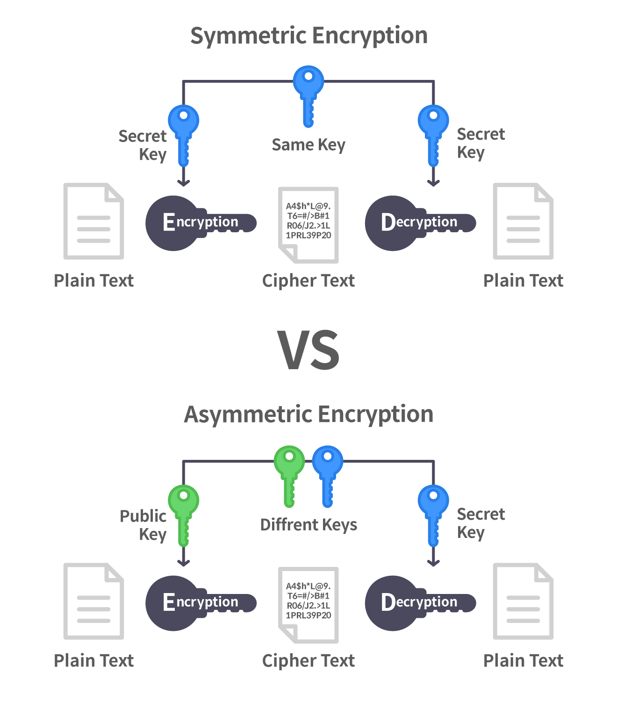
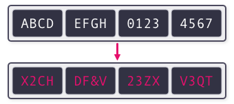
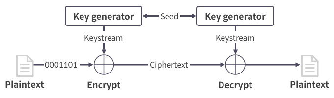
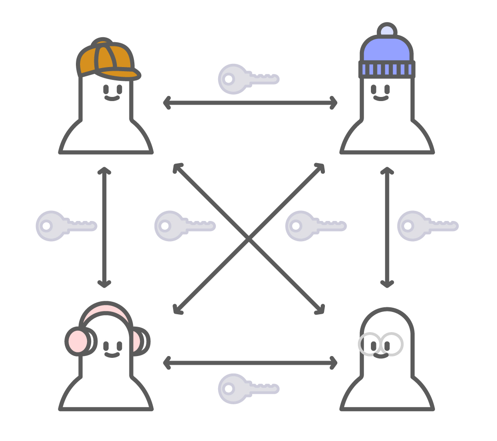
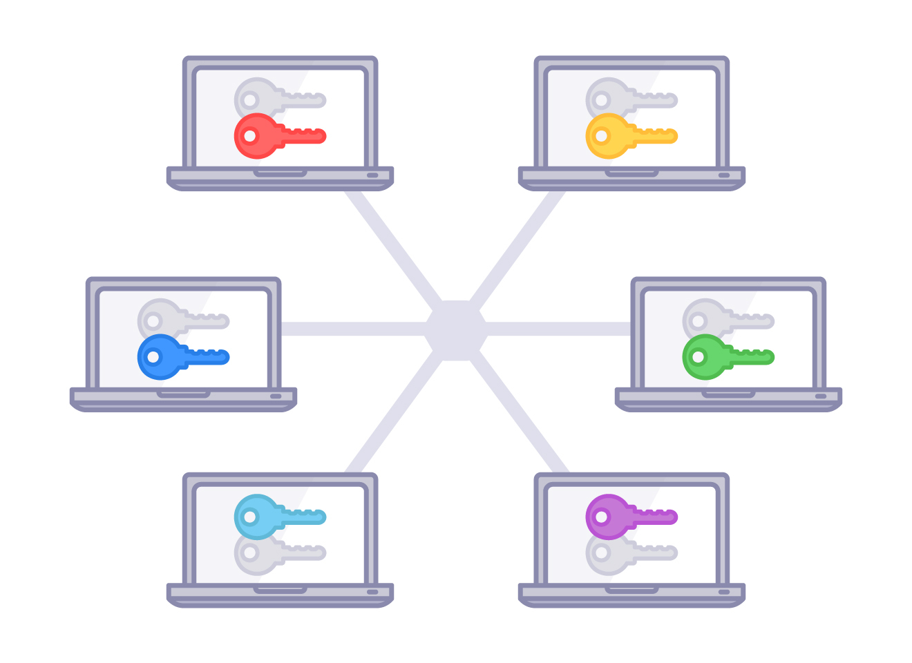

많은 고전 암호에서는 송신자와 수신자가 같은 키를 가지고 있어야 했다. 이렇게 송신자와 수진자가 같은 키를 공유해야하는 암호 시스템을 대칭키 암호 시스템이라고 부른다.
같은 키를 갖고 있어야하는 특성상, 대칭키 암호 시스템은 사전에 서로 키를 공유하는 과정이 반드시 필요하다. 그런데 현대에 많은 데이터가 오가는 네트워크는 도청에 매우 취약하므로 키를 평문으로 공유하기는 부적절하다.
그래서 외부인이 키야 공유되는 과정을 도청해도, 공유되는 키는 알지 못하게 하는 키 공유 알고리즘을 연구하였다.
1970년 중반에는 송신자와 수신자가 서로 다른 키를 사용하는 공개키 암호 시스템의 개념을 창안했다. 이는 대칭키와 대비되어 비대칭키 암호 시스템이라고도 불린다.
1945년에 암호학자 Claude Shannon은 안전한 암호 시스템은 혼돈과 확산의 성질을 만족해야 한다고 발표했다. 현대의 많은 암소 시스템이 두 성질을 따르고 있다.
혼돈은 암호문에서 평문의 특성을 알아내기 힘든 성질을 말한다.
단일 치환 암호를 사용하여 같은 평문을 두번 암호화 하면 출력된 두 암호문은 서로 같다. 공격자는 암호문을 보고 평문이 무엇인지 유추하지는 못하더라도 암호문을 생성한 두 평문이 같다는 사실은 알 수 있다.
따라서 단일 치환 암호는 혼돈 성질을 만족하지 못하는 암호이다.
확산은 평문의 작은 변화가 암호문의 큰 변화로 이어지는 성질이다. 이 성질은 대부분의 고전 암호에서 찾아보기 힘든 성질이다.
대칭키 암호 시스템은 암호화와 복호화에 같은 키를 사용하는 암호 시스템이다. 크게 불록 암호와 스트림 암호로 구분한다.
블록 암호는 평문을 정해진 크기의 블록 단위로 암호화하는 암호이다.
만약 평문의 크기가 블록 크기의 배수가 아니어서 블록으로 균등하게 쪼갤 수 없다면, 평문뒤에 데이터를 추가하는 패딩을 먼저 수행한다.
패딩은 평문이 블록 크기의 배수가 될 때까지 데이터를 추가한다. 블록 암호의 대표적인 예시로는 DES와 AES가 있다.
스트림 암호는 송진가와 수신자가 공유하는 데이터 스트림을 생성하고 이를 평문에 XOR하는 암호이다. 평문을 P, 암호문을 C, 스트림을 X라고 할 때, 암호문 C는 C = P ^ X로 생성된다.
대칭키 암호 시스템은 일반적으로 공개키 암호 시스템에 비해 속도가 빠르다. 그러나 송신자와 수신자가 사전에 키를 교환해야 한다는 제약이 있다.
또한 대칭키 암호 시스템에서는 그룹 내에 여러명이 있을 경우 두 사람마다 서로 다른 키를 생성해서 새용해야 한다. 즉, N명의 사람이 있을 때 N(N-1)/2개의 키가 필요하다.
이ㅜㅎ에도 새로운 상대와 통신할 때마다 계속 키를 생성해야 한다. 공개키 암호 시스템에는 이와 같은 키 생성의 불편함이 없다.
공개키 암호 시스템에서 송신자는 수신자의 공개키로 데이터를 암호화하여 수신자에게 전송하고, 수신자는 자신의 비밀키로 이를 복호화한다.
명칭에서 알 수 있듯 공개키는 모두에게 공개되어 있으므로 공개키를 아는 사람은 누구나 수신자에게 암호문을 보낼 수 있다. 그러나 개인키는 수신자만 알고 있으므로, 공격자는 암호문을 도청해도 이를 복호화할 수 없다.
공개키 암호 시스템에서는 그룹 내의 사람들이 각자의 공개키와 비밀키를 만든 후 공개키만 공개하면 되므로 N명의 사람이 있을 때 2N개의 키만 필요하다.
이는 N(N-1)/2개의 키가 필요했던 대칭키 암호 시스템보다 훨씬 작다. 또한 한 번 키를 생성하고 나면, 새로운 상대와 통신하더라도 자신이 키를 다시 만들어야할 필요가 없다.
반면, 공개키 암호 시스템은 일반적으로 대칭키 암호 시스템에 비해 다소 복잡한 연산이 필요하므로 속도가 느리다. 또한 대칭키 암호와 같은 안전성을 제공하려면, 대칭키 암호보다 긴 키를 사용해야 한다.
메모